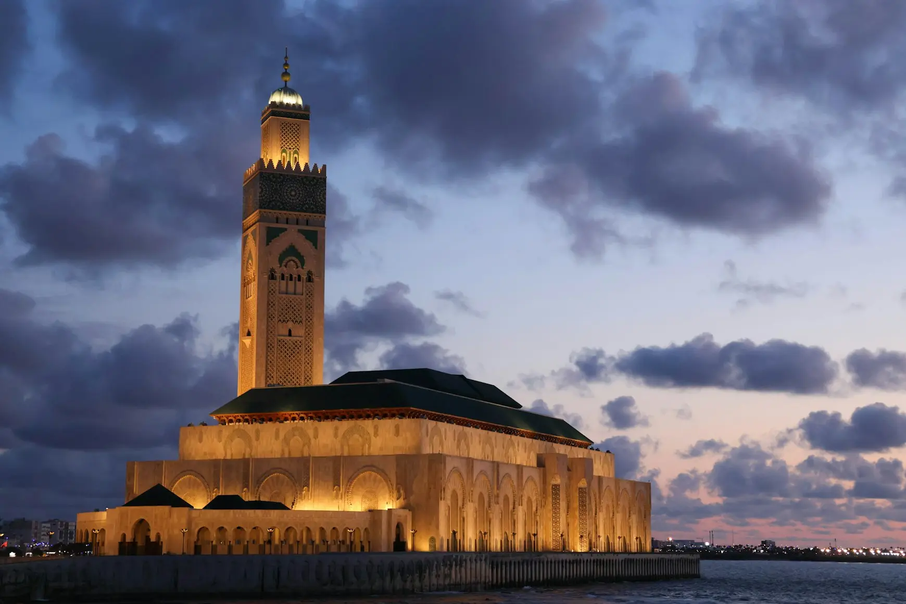
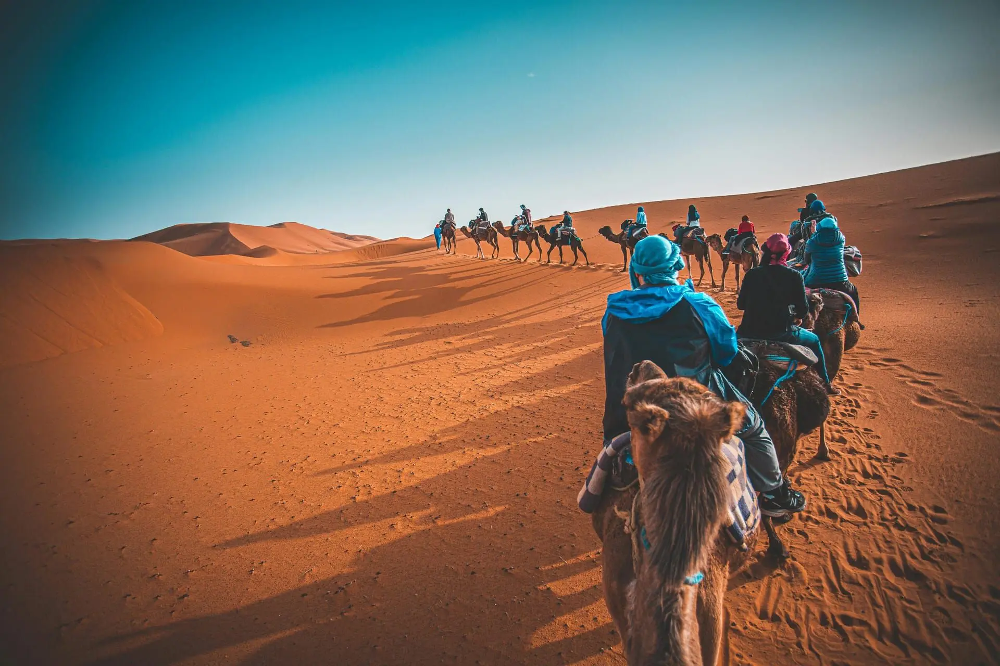

.jpg)
DÉCOUVRIR LE MAROC
Nos Excursions
Transport Ouhaddou propose des circuits premium, des transferts et une logistique VIP à travers le Maroc.
DÉCOUVRIR LE MAROC
Transport Ouhaddou propose des circuits premium, des transferts et une logistique VIP à travers le Maroc.
ARTICLES
Perspectives sur le transport moderne à travers le Maroc.

Découvrez les joyaux cachés autour de la Ville Rouge.

Profitez d'un voyage de 6 jours à Marrakech, la « Ville Rouge », où histoire, culture et aventure se rejoignent. Explorez les souks animés, les monuments emblématiques comme le Palais de la Bahia et les Jardins Majorelle, et découvrez l'Atlas et le Désert d'Agafay. Avec des balades à dos de chameau, une nuit en camp désertique et l'hospitalité marocaine authentique, ce voyage offre un riche mélange de culture, de nature et d'expériences inoubliables.

Découvrez Marrakech et ses environs lors d'un voyage de 6 jours alliant culture et aventure. Vivez l'animation de la place Jemaa el-Fna, les palais historiques et les médersas, et explorez les magnifiques Cascades d'Ouzoud. Profitez d'activités à Terre d'Amanar et passez une nuit magique dans le Désert d'Agafay avec des balades à dos de chameau et du quad en option.

Découvrez la magie de Marrakech et les vastes paysages désertiques du Maroc lors de cette aventure de 8 jours. Des souks animés de Marrakech aux dunes dorées de Merzouga, ce circuit mêle découverte culturelle et expériences outdoor inoubliables. Explorez des kasbahs anciennes, traversez le Haut Atlas et profitez de la beauté sereine du Sahara.
Découvrez la riche histoire et la culture des villes impériales du Maroc.

Ce voyage culturel de 5 jours vous emmène à travers les villes impériales et les paysages diversifiés du Maroc. Commencez par Fès, explorez sa médina classée à l'UNESCO et les artisanats traditionnels, puis traversez le Moyen Atlas vers Marrakech. Découvrez la vibrante « Ville Rouge » avec ses monuments et la place Jemaa el-Fna, avant de rejoindre Casablanca pour visiter la Mosquée Hassan II.

Voyagez de la ville spirituelle de Fès aux dunes envoûtantes de Merzouga lors de ce périple de 5 jours. Traversez le Moyen Atlas, explorez la Vallée des Mille Kasbahs et vivez la magie du Sahara. Visitez des ruines antiques, des ateliers de poterie traditionnels et savourez l'hospitalité des nomades du désert.

Partez pour une aventure de 6 jours depuis Fès à travers les paysages les plus diversifiés du Maroc. Traversez le Moyen Atlas, la vallée du Ziz, et vivez le Sahara avec des balades à dos de chameau et des nuits sous les étoiles. Découvrez les Gorges du Todra et du Dadès, la Vallée des Roses et la kasbah d'Aït Ben Haddou avant de terminer à Marrakech.
Découvrez le patrimoine culturel et spirituel du Maroc depuis Fès.

Profitez d'un circuit de 3 jours depuis Ouarzazate à travers la palmeraie de Skoura, les Gorges du Dadès et du Todra, jusqu'aux dunes d'Erg Chebbi à Merzouga. Vivez une balade à dos de chameau et une nuit en bivouac sous les étoiles, avec une visite de la ville historique de Rissani.

Embarquez pour un voyage de 7 jours depuis Ouarzazate à travers Zagora, les dunes de Merzouga et les Gorges du Dadès et du Todra. Continuez vers Imilchil et les magnifiques Cascades d'Ouzoud avant de terminer votre séjour à Marrakech. Une aventure inoubliable alliant désert, montagne, merveilles naturelles et découverte culturelle.

Profitez d'une aventure de 3 jours depuis Ouarzazate à travers la Vallée du Draa jusqu'à Zagora et les dunes de Merzouga. Vivez une balade à dos de chameau et une nuit magique en bivouac sous les étoiles, puis revenez via les impressionnantes Gorges du Todra et la palmeraie de Skoura.
Des aventures inoubliables qui vous plongent dans des paysages à couper le souffle, une culture riche et des expériences uniques.
Embarquez pour un voyage de 10 jours depuis Casablanca vers les paysages époustouflants du Grand Sud marocain. Découvrez la Mosquée Hassan II, le désert d'Agafay et le charme impérial de Marrakech avant de traverser le Haut Atlas vers Ouarzazate. Explorez la Vallée du Draa, les dunes de Merzouga et les Gorges du Todra et du Dadès, avec des villages amazighs et les Cascades d'Ouzoud. Ce circuit immersif combine aventure désertique et nature spectaculaire.

Expérience PremiumExplorez le Maroc lors d'un voyage de 8 jours à travers ses villes impériales et ses métropoles modernes. Découvrez les médinas historiques de Fès et Marrakech, la richesse culturelle de Rabat et l'atmosphère dynamique de Casablanca. Visitez des sites du patrimoine mondial de l'UNESCO, des souks animés et de grands palaces tout en vivant la légendaire hospitalité marocaine.
 Points Forts des Villes
Points Forts des Villes

Expérience DésertDécouvrez le Maroc lors d'un voyage immersif de 11 jours à travers ses villes impériales, ses paysages désertiques et ses trésors culturels. Depuis Casablanca, explorez Marrakech et la ville cinématographique d'Ouarzazate. Traversez la Vallée du Draa jusqu'aux dunes dorées de Merzouga pour une expérience saharienne inoubliable. Continuez vers Fès, cœur spirituel du Maroc, puis visitez les ruines romaines de Volubilis et les villes impériales de Meknès et Rabat.
Découvrez la culture vibrante, l'histoire et les joyaux cachés des villes emblématiques du Maroc.

Profitez d'un voyage de 6 jours depuis Agadir combinant la côte atlantique, les paysages de montagne et l'aventure désertique. Explorez des villages de pêcheurs, la Réserve de Souss Massa, les paysages granitiques de Tafraoute et les grandes dunes de Chegaga pour une balade à dos de chameau et une nuit en bivouac. Retournez via la Vallée du Draa et la ville cinématographique d'Ouarzazate.

Découvrez le Maroc lors d'un voyage de 8 jours depuis Agadir à travers les magnifiques Cascades d'Ouzoud et le Lac Bin El Ouidane, puis les villes impériales de Marrakech et Rabat avant de rejoindre Casablanca. Découvrez la Mosquée Hassan II, l'architecture berbère et patrimoine impérial.

Profitez d'une escapade de 2 jours depuis Agadir vers les magnifiques Cascades d'Ouzoud. Observez des macaques de Barbarie, explorez des oliveraies et des villages berbères, et détendez-vous au lac Bin El Ouidane. Une escapade rafraîchissante mêlant nature, culture et paysages panoramiques.
Découvrez les paysages à couper le souffle du Maroc et des activités outdoor palpitantes, des dunes du désert aux sommets des montagnes.

Embarquez pour un trek de 9 jours dans le nord du Maroc, à la découverte de montagnes époustouflantes, de villages berbères traditionnels et de paysages naturels diversifiés. Avec un guide expérimenté multilingue, explorez des sentiers reculés et vivez des rencontres culturelles authentiques.

Partez pour une aventure de 8 jours depuis Marrakech vers les splendides Montagnes M'Goun. Ce circuit de trekking vous emmène à travers des villages berbères reculés, des vallées dramatiques et des paysages de montagne époustouflants pour une expérience inoubliable.

Embarquez pour une aventure de trekking de 8 jours à travers le désert marocain et la pittoresque Vallée du Draa. Découvrez de vastes dunes, des villages berbères traditionnels et des oasis verdoyantes. Vivez des randonnées à dos de chameau et des nuits en bivouac sous les étoiles.

Relevez le défi d'un trek de 8 jours vers le Jebel Toubkal, le plus haut sommet d'Afrique du Nord. Traversez le magnifique Haut Atlas, des villages berbères et des paysages alpins sauvages, guidés par des locaux expérimentés.

Découvrez le nord du Maroc lors d'un trek de 9 jours à travers les Montagnes du Rif et les villes côtières. Explorez les ruelles bleues emblématiques de Chefchaouen, le charme artistique d'Asilah et les villages berbères environnants avec un guide multilingue.